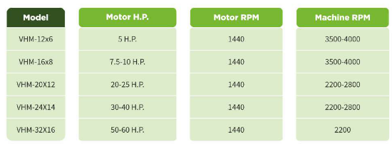

SKU: SAL-M-3
Pulverizer
| Sub-Category | Spices Processing |
| Material | Mild Steel, Stainless Steel 304/316 |
| Brand | Salvin |
Salvin Industries offers pulverizer machines designed for grinding spices, grains, chemicals, and food materials into fine powder with controlled particle size.
The material is fed into the pulverizer through the inlet, where it enters the grinding chamber. Inside the chamber, high-speed rotating blades, hammers, or beaters create impact and shear force to break down the material into fine particles. The ground material is continuously reduced in size until it becomes fine enough to pass through the mesh or screen. The final output is then collected from the outlet, ensuring uniform particle size as per the selected mesh.
The material is fed into the pulverizer through the inlet, where it enters the grinding chamber. Inside the chamber, high-speed rotating blades, hammers, or beaters create impact and shear force to break down the material into fine particles. The ground material is continuously reduced in size until it becomes fine enough to pass through the mesh or screen. The final output is then collected from the outlet, ensuring uniform particle size as per the selected mesh.
Rate this product:
Click a star to submit your review